Think of Yourself as a Teacher
As a dental worker, you will be able to improve the health of the people in your community and help prevent the spread of HIV if you think of yourself as a teacher. The knowledge you share can have a more lasting impact on the health and well-being of a community than your skills as a dental worker.
By making connections with people and organizations working on different aspects of HIV, you will learn new information that can help you and your community. Contact local, regional, and national groups who work on HIV education and prevention, on providing service for people with HIV, and on expanding access to ARVs and other medicines.
Help people with the resources you have, and think about where you might find more resources to help meet people’s needs.
If all health workers can give the same correct, up-to-date information, it will help prevent the fear caused by wrong ideas about AIDS. If their neighbors are not afraid of them, people with HIV—as well as those who care for them — can become more accepted in the community. Then they can help others understand every person’s real risk of getting HIV. So learn as much as you can about HIV and share the information with everyone.
remember to:
• Give advice to the people you treat, especially those most at risk for getting infected, such as young people, migrants and refugees, sex workers, drug users who share needles, and anyone having sex with more than one faithful partner.
• Fight for improvements in the social and legal services available for people with HIV. remember, the fight is against the conditions that lead to the spread of HIV, and not against people who have HIV.
Fight to end discrimination against those infected with HIV. Discrimination is an obstacle to care. It may stop people from coming for treatment and it may stop people from learning how to prevent the spread of infection.
appendices
Get Rid of Wastes Safely...................... 199
The Dental Kit............................... 201
Medicines.............................. 202
Supplies............................... 205
Instruments............................. 207
Records, Reports, and Surveys................. 212
Resources................................. 215
Vocabulary................................. 217
Index..................................... 222
Other Books from Hesperian................... 229
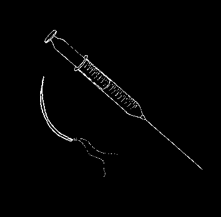

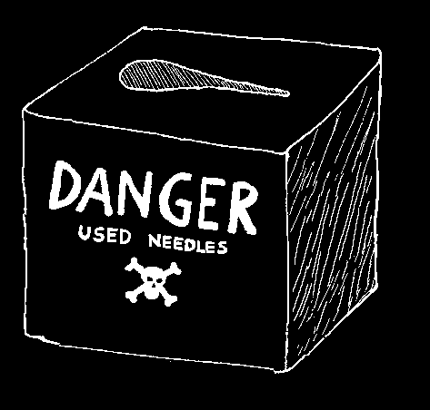
Get Rid of Wastes Safely
Every time you examine a person’s mouth, fill a cavity, or extract a tooth, you are left with some waste. For example, used cotton or gauze, disposable needles and syringes, plastic gloves, and other materials must be thrown away. But do not put them in the trash. These wastes carry germs and can spread infections to you and to people in the family and community. Wear gloves when you touch wastes, and get rid of them carefully.
HOW TO DISpOSE OF SHaRp
WaSTES
Sharp wastes must be put into a container so they will not injure anyone who finds them. a container made of metal or heavy plastic, with a lid or tape to close it, works well.
When the container is half full, add 5% bleach solution, then seal it closed and bury it deep in the ground.
Make a box to dispose of needles safely
Find a metal or hard plastic box. Make a long hole in the lid of the box that is wide on one side and gets narrower on the other side.
(continued on next page)
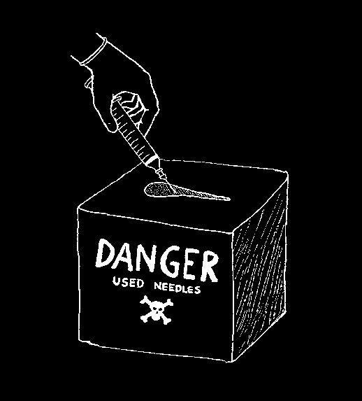


When you have finished using a disposable syringe, put the needle into the box and slide it down to the narrowest point.
Then pull up on the syringe and the needle will fall off into the box. The plastic syringe can be sterilized and thrown into a waste pit (see below).
When the box is half full, pour 5% bleach solution into the box, seal it closed, and then bury it deep in the ground.
OTHER WaSTES
Other wastes, like plastic gloves, syringe barrels, or cloth soaked in blood, should be sterilized and then buried deep in the ground. You can sterilize them by soaking them in bleach for 20 minutes.
WARNING: do not burn plastic gloves, syringes, or any other plastics. Burning plastic wastes is dangerous—when plastic burns, it makes smoke and ash that is very poisonous.
BuRYING WaSTES
Find a place away from where people get their drinking water and away from where children play. Dig a safe waste pit to bury wastes.
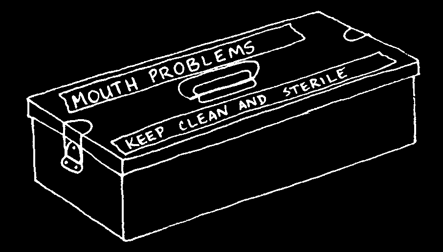
The Dental Kit
In the next 10 pages, there are lists of medicines, instruments, and other supplies recommended in this book. Keep them together in a kit. You may want to change some of them, or add others to meet your own needs.
as a dental worker, you will be able to get many of the items on the lists from your government medical stores. Some things you will have to buy yourself. That can be expensive, so we make several suggestions to help you save money.
Before you order, decide how many of each thing you need. ask yourself: How many persons do I treat each day? For what problems? Then order enough medicines and supplies for three months.
Note: as more people learn about the treatment you can give, more will come to ask for your help. remember this when you order. remember, also, that some persons may need more than one treatment.
On pages 202 to 207 we give an example. We recommend how many medicines, supplies, and instruments you will need if you see 10 people a day—200 a month. You cannot be exact, of course, because you cannot predict exactly what problems will arise. However, we can say that, on the average:
In a group of 10 persons with urgent problems:
• 6 persons need you to take out 1 or more teeth (so you must inject)
• 2 persons need cement fillings
• 2 persons need medicine before you can treat them.
Many of these persons must return for another visit:
• 5 persons need you to scale their teeth and teach them how to care for them better
• 1 person will need a cement filling
• 2 persons will need treatment after taking medicine.
Medicines local name
Amount you
Amount to
See
Use
Proper Name
(write in here) need in 3 months keep in kit
Page
For
1. aspirin,
2,000 pain
300 mg tablets tablets tablets
2. acetaminophen
(paracetamol)
500 mg tablets tablets tablets
For
1. penicillin,
2,000 infections
250 mg tablets tablets tablets
2. erythromycin,
250 mg tablets tablets tablets
3. nystatin drops or
12 small
2 small gentian violet bottles bottles another antibiotic, tetracycline, is not recommended for any of the treatments in this book because it is a broad-spectrum antibiotic. Narrow spectrum antibiotics (see 'antibiotics,’ page 217) are usually safer and just as effective for most dental problems. If you do use tetracycline, read page 356 of Where there ls No Doctor and remember, do not give tetracycline to a pregnant woman or to a young child. Tetracycline can make a young, developing tooth turn yellow.
SUGGESTIONS:
1. Compare prices before you buy medicines. Often the same medicine has many different names. The generic name (the name we use on this page) usually is cheapest, and the medicine is just as good as the
'brand-name medicines’. use the generic name to order and buy, not the brand name.
2. always look for a date on the package. It is called the expiration date (or expiry date). if today is iater than that date, do not buy or use that medicine.
3. Be careful to give the correct dose. Read the next two pages carefully, as well as the 'Treatment’ section of each problem in Chapter 7. If pages 203 and 204 are not clear to you, read Chapter 8 (pages 59 to 64)
of Where there ls No Doctor.
4. For serious infections or serious pain, see page 204.

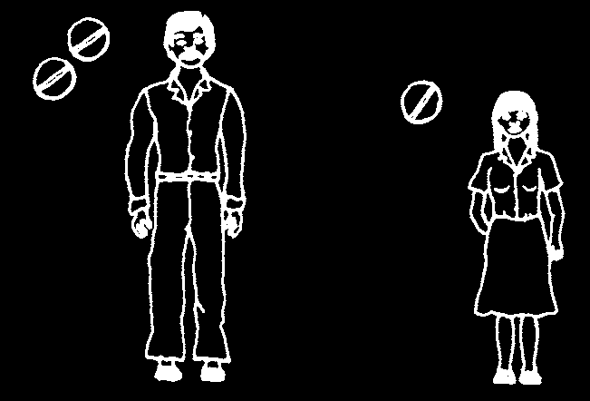
THE CORRECT DOSE
Before you give medicine, think about the sick person’s weight and age. The smaller children are, the less medicine they need. For example, pain medicine such as aspirin (300 mg tablets) or acetaminophen (500 mg tablets) can be broken up into smaller tablets:
Four times a day:
Babies take
Adults
Childen 8–12
Children 3–7 acetaminophen take 2 tablets take 1 tablet take ½ tablet only, ¼ tablet
NOTES: Do not hold aspirin on the bad tooth. aspirin has acid that can hurt the tooth. always swallow aspirin immediately. For severe pain, when aspirin does not help, an adult can take 30 mg of codeine 4 to 6 times a day, as needed.
aNTIBIOTICS: TO FIGHT INFECTION antibiotics kill bacteria that cause infections. Some antibiotics work better than others on certain bacteria. If you can, test the pus (page 220) to find which antibiotic works best.
do not give penicillin to a person who is allergic to it. ask about the person’s allergies before you give penicillin pills or injections. When you inject penicillin, always keep epinephrine (Adrenalin) ready to inject if the person shows signs of allergic shock. Stay with the person for 30 minutes. If you see these signs…
• cool, moist, pale, gray skin (cold sweat)
• difficulty breathing
• weak, rapid pulse (heartbeat)
• loss of consciousness
… immediately inject epinephrine:.5 ml for adults or.25 ml for children.
If necessary, inject the same dose again after 20 or 30 minutes. For more information on allergic shock, see Where there Is No Doctor, pages 70 to 71.
always give the full dose of penicillin or any antibiotic, even if the person feels better. See page 94 for the correct dose of penicillin or erythromycin. Erythromycin also comes in liquid form. It has 125 mg in 5 ml, so 10 ml of liquid (about 2 large teaspoons) is the same as one 250 mg tablet.
it is important to take a strong first dose of penicillin or erythromycin, and then smaller doses 4 times a day for 3 to 5 days after that. Carefully read the instructions on page 94.
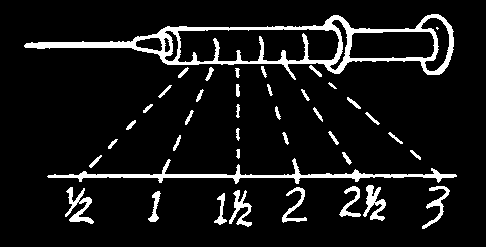

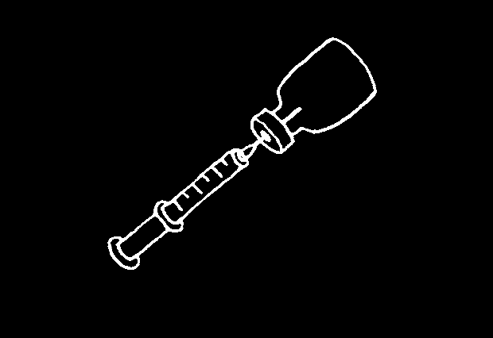
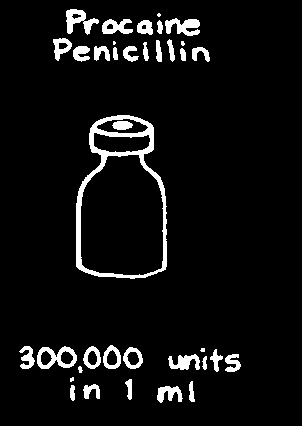
INJECTIONS: FOR SEVERE INFECTIONS
It is always safer to take medicine by mouth.
Sometimes, however, an infection is so bad that you need to give medicine by injection. Learn how to give injections from an experienced health worker. The injections described on this
1 1.5 2 2.5 page are not like the anesthetic injections in
Chapter 9 of this book—you must inject these
3 ml syringe medicines into a large muscle in the buttocks or arm. For more instructions on this kind of injection, see Chapter 9 (pages 65-74) of Where there Is No Doctor.
For severe infection: There are 2 kinds of penicillin to inject.
You will usually use
For very severe infections, give
'aqueous procaine
'crystalline penicillin’ every penicillin’. Give only
6 hours for the first day. It acts
1 injection per day.
quickly and for a short time only.
inJecTaBLe Medicines suppLies dOse adult
Child 6–12
Child 1–6 amount you need amount to years old years old proper Name in 3 months keep in kit
(over 40 kg)
(22–39 kg)
(10–22 kg)
1. procaine
4 bottles
4 ml
2 ml
1 ml penicillin, bottles
2 times/
2 times/day
2 times/day bottle with day
300,000 units per ml
2. crystalline
1.5 ml
1 ml penicillin,
1 bottle bottles
3 ml
4 times/
4 times/ bottle with
4 times/ day day
1,000,000 day units per ml suppLies
Local name amount you need in amount to
See use proper Name
(write in here)
3 months keep in kit page
To make
1. clean
8 packages dressings cotton gauze of 100
20 pieces
2. clean
10 packages cotton rolls of 50
8 rolls
To
3. oil of fill cloves
1 small cavities
(eugenol)
50 ml bottle
4. zinc oxide
1 small powder
500 grams bottle
To treat
5. flouride sensitive toothpaste teeth
1 tube
1 tube
To give
6. lidocaine injections
2% 1.8 ml
8 boxes of 100 of local cartridge cartridges cartridges anesthetic
7. disposable needles,
8 boxes of
27 gauge long
100 needles needles
8. lidocaine topical
5 small anesthetic tubes tube
FLuORIDE
You can use a special solution of fluoride (if available) or any fluoride toothpaste, which is much cheaper and more common (see above, number 5), in 2 ways:
To treat a sensitive tooth: put cotton rolls between the lip and gum on each side of the bad tooth. Dry the bad tooth with cotton and look for the small groove that is causing the pain. Cover the groove with a smear of fluoride toothpaste and tell the patient not to spit or rinse it out for several minutes. One week later, give the same treatment again, or have the patient do it himself.
To help prevent cavities, in children who do not clean their teeth with fluoride toothpaste, once a week have children bring their toothbrushes or toothsticks to school. put some fluoride toothpaste on each child’s brush or stick and have them brush and coat their teeth, leaving the paste in their mouths for at least one minute. Then they can spit it out. Do not eat or drink for 30 minutes.
On page 24, children are shown using a twice-yearly application of a special paste, a 'topical fluoride gel’. This is good, but the weekely treatment with fluoride paste is even better for the teeth.
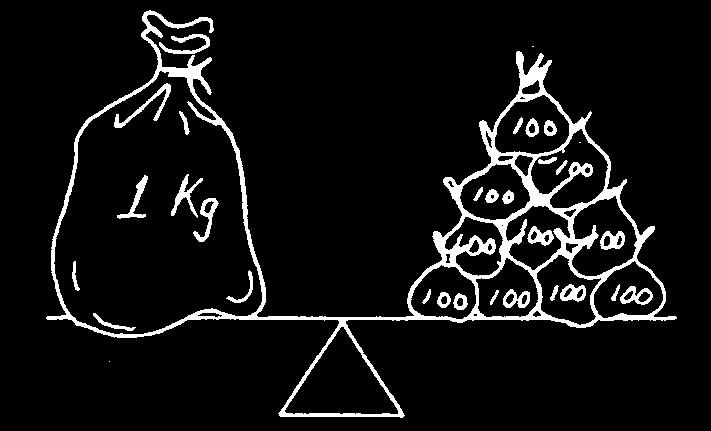
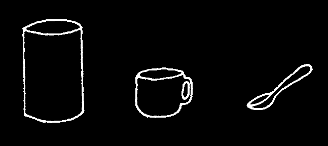
Weight (how heavy something is)
Volume (how full something is)
1liter
1 cup
1 teaspoon
10 x 100
1000 ml = 1 liter kilogram
= grams
(kg)
(equals)
(g)
236.5 ml = 1cup
5 ml = 1 teaspoon
1 Kilogram = 1000 grams
1 ml = 1 cubic
1 gram = 1000 mg centimeter (cc)
local name amount you need amount
See use proper Name
(write in here)
in 3 months to keep in kit page
To make rinses
1. salt
2 kilograms
100 grams
2. hydrogen peroxide
3 liters
500 ml
To keep
1. 95% alcohol instruments disinfectant solution
18 liters
1.5 liters clean
2. bleach for disinfectant solution
2.5 liters
125 ml (½ cup)
To keep arkansas instruments sharpening stone
1 stone
1 stone sharp
For wooden tongue
8 boxes of examining depressors
50 per box
SuGGESTIONS:
If you order your supplies in bulk long before you need them, you probably will pay lower prices. If you have a place to store supplies that is clean, dry, and free from cockroaches and rats, consider ordering enough for one year instead of only 3 months.
insTRuMenTs
When you are treating several people on the same day, you will need to clean some instruments (see pages 86 to 89) at the same time that you are using others. Therefore, it is necessary to have several of each kind of instrument, to be sure that the instrument you need will be ready (clean or sterile) when you need it.
There are 3 instruments you will need for each person who comes to you, no matter which treatment is needed. They are: a mirror, probe, and cotton pliers. Keep them together. Below we recommend that you have 15 of each of these, so you can keep one in each treatment kit. You do not need to buy all of these instruments. You can make several of them—see pages
208–210. If you like, buy only one example of each of the instruments below, and use them as models to copy when you make your own extra instruments.*
Number
Local name to buy or
See use proper Name
(write in here)
make page
To examine
1. dental mouth or to mirror give any
2. explorer treatment
3. cotton pliers
To inject aspirating dental syringe to use with
1.8 ml cartridges)
To scale
1. lvory C-1 scaler teeth
2. Gracey 11–12 curette
To place
1. spoon excavator cement
2. filling instrument fillings
3. cement spatula
To remove
1. spoon excavator teeth
2. straight elevator
(no. 34)
3. upper universal forcep (no.150)
4. lower universal forcep (no.151)
Note: See pages 155–156 for recommendations of other elevators and forceps that are good to have if you can afford them.
*If you want the help of a charitable organization in buying instruments, see page 211.
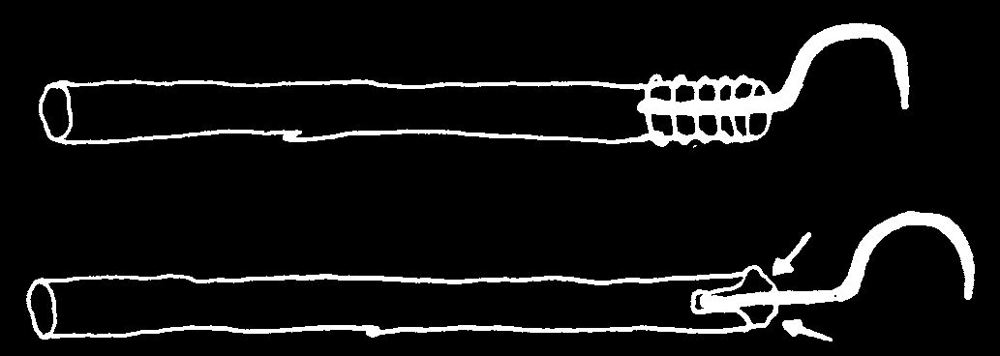
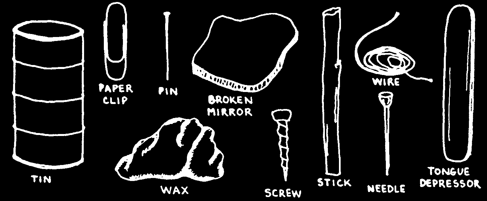
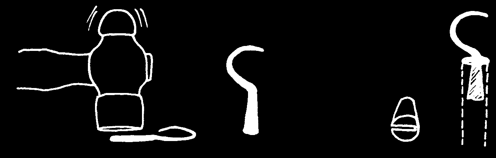
MaKING YOuR OWN DENTaL INSTRuMENTS*
Here are a few ideas for making instruments at low cost. Try to use materials that are available where you live.
Can you think of any other materials you can use?
Each instrument has two parts: a handle and a working piece at the end.
Join them together:
… with wire:
… with glue or even wax:
If you make the end flat, it can prevent the working piece from turning.
pound the working piece with a hammer and make a flat slot in the handle so the working piece cannot turn.
bottom of working piece goes in this slot
*I am grateful to aaron Yaschine for the ideas in this section.


MaKING THE THREE INSTRuMENTS YOu uSE MOST
Mirror: use old pieces of mirror or a shiny piece of tin. You even can use a polished silver coin. a tongue depressor is the handle.
probe: use the end of a paper clip, pin or needle for the working piece. Rub it against a smooth stone to sharpen it. Bend it so it can reach around to the back of a tooth. attach the working piece to a smooth stick handle (p. 208).
Tweezers: Draw the shape on a piece of tin and then cut it out with strong scissors. use a file or a smooth stone to make the edges smooth. Bend in half to make the tweezers.
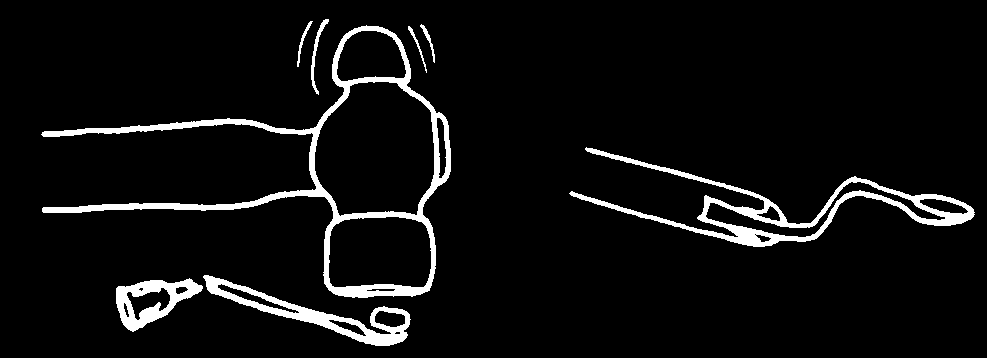


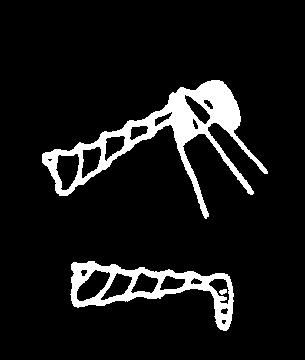

MaKING OTHER INSTRuMENTS aND SuppLIES spoon: Bend a paper clip or needle. Flatten the end. Then pound a small stone against the end, to make it hollow. Make 2 bends and attach to a stick handle.
Filling Tool: Remove the heads from 2 long screws. With a file and hammer, make the end of one screw flat and the end of the other screw round. Bend each end in the direction of the edge (not the face) of the flat side. attach both working pieces to a small stick handle.
dental Floss: When using string to clean between your teeth (pages
71–72), you may have trouble getting this string down in between your teeth. Sometimes, also, the string gets caught there, forming a kind of
'bird’s nest’. Three things can cause problems with dental floss:
1. an incorrectly made filling—flat and rough instead of round and smooth.
Replace the filling.
2. Teeth too tight together. use the floss on a tooth. Then pull the string out from between the teeth as you press the free end down against the gum with the fingers of your other hand. If there is a sharp filling on a tooth, the string will pass under the filling as it comes free.
3. string that is too thick. Make thinner but stronger floss by waxing as in this
(1) Soak thin string in hot wax.
picture. The wax also will make the floss
(2) To remove the extra wax, pull easier to slide between your teeth.
the string between your fingers.
BuYING DENTaL INSTRuMENTS
When you do not have much money,
Other organizations that may you must spend wisely. Dental be able to help:
instruments are very expensive, especially when you buy them at
World dental Relief commercial prices. ask other health pO Box 747 workers in your area where you can get
Broken arrow, OK 74013-0747 instruments at lower prices. You can uSa also try contacting the national dental tel: 1-918-251-2612 association in your country. If you do not fax: 1-918-251-6326 know how to locate your national dental website: www.dentalrelief.com association, contact the World Dental e-mail: dentalreliefinc@aol.com
Federation:
project HOpe
Fdi – World dental Federation
255 Carter Hall Lane
Tour de Cointrin
Millwood, Va 22646
Case postal 3 uSa
1216 Geneve-Cointrin tel: 1-540-837-2100
SWITZERLaND
fax: 1-540-837-1813 tel: 41-22-560-81-50 website: www.projecthope.org fax: 41-22-560-81-40 e-mail: webmaster@projecthope.org website: www.fdiworldental.org direct Relief international e-mail: info@fdiworldental.org
27 S. La patera Lane
Santa Barbara, Ca 93117
There are many organizations that uSa donate health supplies—including dental tel: 1-805-964-4767 instruments—or that distribute them at fax: 1-805-681-4838 low cost. Some of these organizations website: www.directrelief.org prefer to help church-sponsored e-mail: info@directrelief.org health projects, but others will provide instruments to anyone who needs
Map international them.
4700 Glynco parkway
Brunswick, Ga 31525-6800
Durbin pLC, a company in England, may uSa sell the instruments mentioned in this tel: 1-800-225-8550 book at lower than commercial prices.
website: www.map.org
For more information, contact:
dentaid durbin pLc
Giles Lane, Landford,
180 Northolt Road
Salisbury, Wilts Sp5 2BG
South Harrow, Middlesex Ha2 0LT uK uK tel: 44-1794-324249 tel: 44-20-8660-2220 fax: 44-1794-323871 fax: 44-20-8668-0751 website: www.dentaid.org website: www.durbin.co.uk e-mail: info@dentaid.org e-mail: cataloguesales@durbin.co.uk
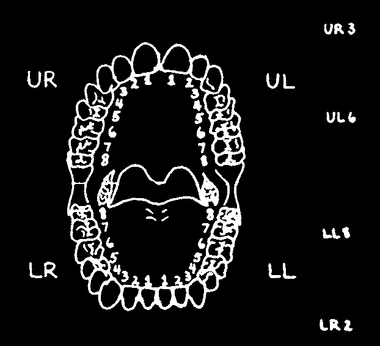
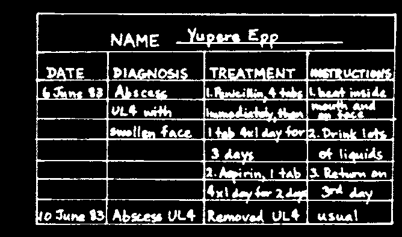
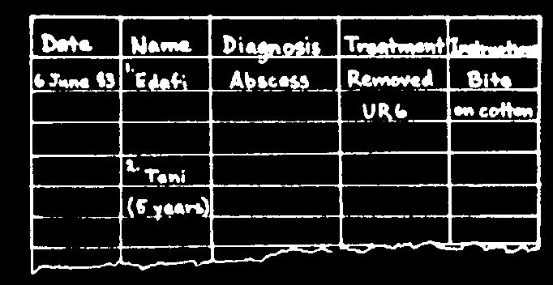
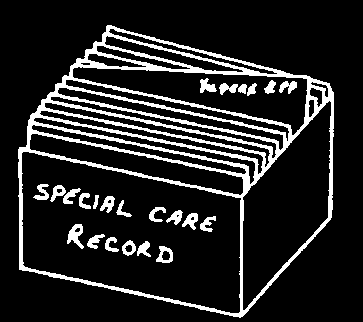
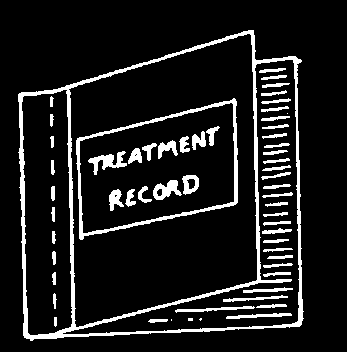
Records, Reports, and Surveys
For record keeping, you can divide the mouth into 4 parts:
• upper Right (uR)
• upper Left (uL)
• Lower Left (LL)
• Lower Right (LR)
In each part there are 8 teeth (fewer in children—see page 43).
You can call each tooth by its short name,
Here are the short names of 4 teeth.
Can you find the tooth named LL5?
for example, uR3.
Keep a record of each person you see. Write some brief information about the person and the problem. This way, if the person returns, you remember what you did to help.
When a person needs to come more than once to take care of a problem, it is better to keep a special record for that person. With all the treatments on one page, you can follow that person’s progress more easily. Below is an example for a person named Yupere. Yupere has a bad tooth that has hurt from time to time for 2 months. One day when he woke up, his face was swollen. Yupere decided to wait a day to see if the swelling would go away.
The next day it was worse, so he went to the medical post for treatment.
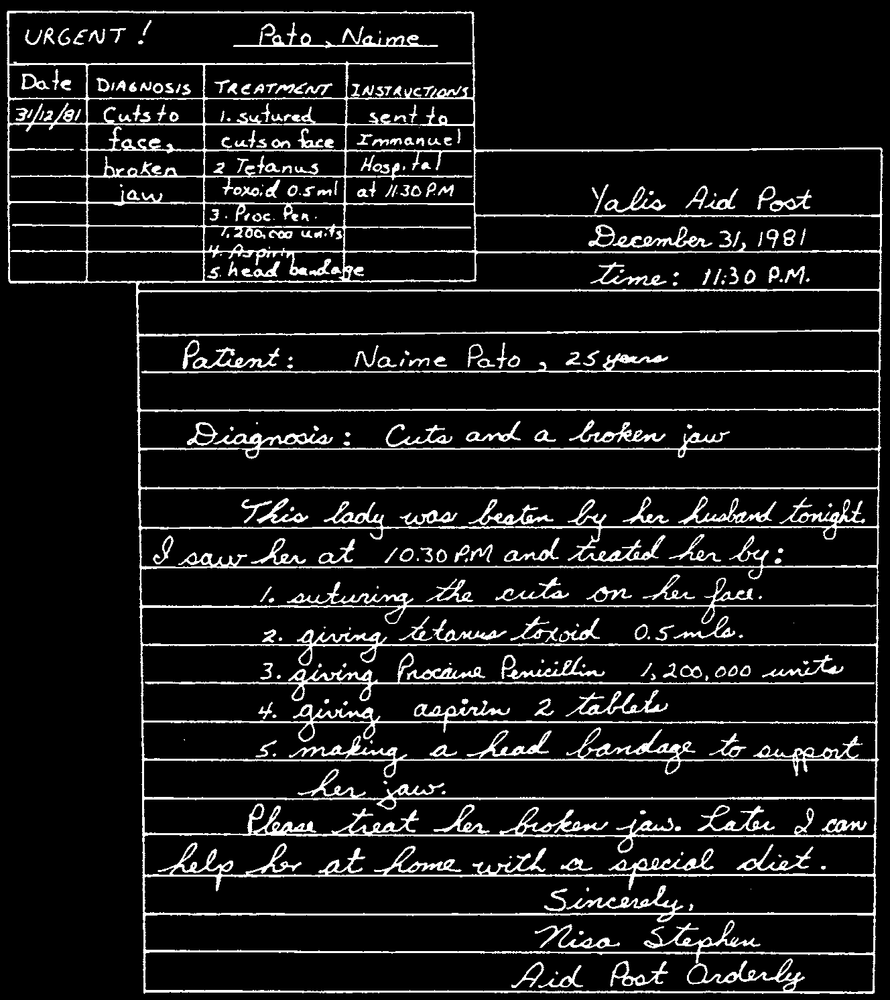
Reports
You need to write a report whenever you send a person for medical help.
Give as much information as possible so that your treatment can continue and new treatment starts as quickly as possible. If you cannot go along, always send a report with a sick person.
The story of niame: after drinking for several hours, Niame’s husband returned home asking for money. She had none and told him so. He did not believe Niame, so he beat her with his hands and then a knife. Naime’s friends carried her, unconscious and bleeding, to the aid post. The front part of her lower jaw was hanging out of position.

surveys
It is a good idea to know how many persons in your community have cavities and gum disease. Look in the mouths of children and adults and make a record of what you see. Here is an example that is used in Mozambique:
put a line through the circle for each person with:
• cavities Ø
• red, swollen gums Ø
The dental workers in Mozambique do a quick survey in 2 schools, 2 mother-and-child health clinics, and 2 cooperatives or factories in their community.
In each place, they examine 50 persons. This is enough to give an idea of the general health of teeth and gums in the community.
They make a paper for each age group.
Each paper has 3 sections. They make a mark for each person they see, until all 50 circles have marks in them. They make extra marks if they see a tooth and/or gum problem.
In this example, you can see that children have more problems with cavities, while adults suffer more from gum disease. This is often true.
This survey helps the dental worker in three ways:
(1) it shows how serious tooth decay and gum disease are in the community.
(2) it shows which age group is suffering the most. To these people the dental worker must plan to give the most attention.
(3) it gives the dental worker something to show the people when they are discussing why to change some old habits and adapt some new ideas.
Resources
TEaCHING MaTERIaLS
Common Oral Diseases, slide set.
an introduction to oral disease including periodontal disease and dental caries and their prevention. also describes how a health worker should examine a patient’s mouth and gives details of the common problems that a dental worker meets.
Order from:
TaLc pO Box 49, St albans
Herts, aL1 5TX uK tel: + 44 1727 853869; fax: + 44 1727 846852 e-mail: info@talcuk.org; website: www.talcuk.org
Guide for Safety and Infection Control for Oral Healthcare Missions
This is a practical guide to providing safe dental care in low-resource settings.
available from:
Osap — Organization for safety & asepsis procedures a Global Dental Safety Organization p.O. Box 6297 annapolis, MD 21401 uSa tel: 1-800-298-6727; fax: 1-410-571-0028 e-mail: office@osap.org; website: www.osap.org
A Teacher Resource to Support Dental Health Education, an illustrated manual for teachers of Kindergarten through Grade 5. Includes lesson plans and activities.
Can be downloaded from the internet here:
www.health.gov.sk.ca/mc_dp_dental_teacherresource.pdf
More information from:
Government of Saskatchewan
3475 albert Street
Regina, SK S4S 6X6
CaNaDa
DENTaL aID ORGaNIZaTIONS a listing of organizations around the world that provide different types of assistance for oral health education, training, and care can be downloaded from the internet here: www.fdiworldental.org/public_health/assets/partners/aid/Aid_organisations.pdf
OTHER ORaL HEaLTH RESOuRCES
Fdi World dental Federation
Regional centre for Oral Health
Tour de Cointrin
Research & Training initiatives
Case postal 3
No 3c CBN Road
1216 Geneve-Cointrin pMB 2067, Jos
SWITZERLaND
plateau State, NIGERIa tel: 41-22-560-81-50 tel: 234-73-462-901 fax: 41-22-560-81-40 fax: 234-73-462-901 e-mail: info@fdiworldental.org e-mail: hdanfillo@yahoo.com, website: www.fdiworldental.org isdanfillo@rcortiafro.org website: www.rcortiafro.org
World Health Organization (WHO)
Oral Health programme
Basic Package of Oral Care is a avenue appia 20
WHO-affiliated program that aims to
1211 Geneva 27 include preventive and curative oral
SWITZERLaND
health into the primary health care tel: 41-22-791-3475 system in a way that is affordable and fax: 41-22-791-4866 achievable for low-income communities.
website: www.who.int/oral_health
It includes urgent treatment (pain relief
WHO has a Focal point for Oral Health and emergency treatment), affordable in each of its regional offices around fluoridated toothpaste, and atraumatic the world. This web page gives contact
Restorative Treatment (aRT) which information for each regional office, as removes cavities and diseased parts well as other resources:
of teeth without drilling. For more http://www.who.int/oral_health/partners/en/ information:
Department of Global Oral Health,
WHO collaborating centre for
Nijmegen promoting community-based Oral
Radboud university
Health Models, intercountry center
Nijmegen Medical Center for Oral Health (icOH)
p.O. Box 9101
Ministry of public Health
6500 HB Nijmegen
548 Ban Nong Hoi,
THE NETHERLaNDS
Chiang-Mai-Lamphun Road, e-mail: info@globaloralhealth-nijmegen.nl
Muang, Chiang Mai 50000 tel: 31-24-361-6995
THaILaND fax: 31-24-354-0265 tel: 66-53-801160, 66-53-277027 website: www.globaloralhealthfax: 66-53-281909 nijmegen.nl e-mail: icoh@icoh.org, icoh@loxinfo.co.th website: www.icoh.org international no-noma Federation c/o Winds of Hope Foundation www.hivdent.org
20 avenue de Florimont
This website includes treatment
CH 1006 Lausanne information and training resources to
SWITZERLaND
improve oral health for people with HIV.
tel: 41-21-320-77-22 fax: 41-21-320-77-00 e-mail: info@nonoma.org website: www.nonoma.org/en